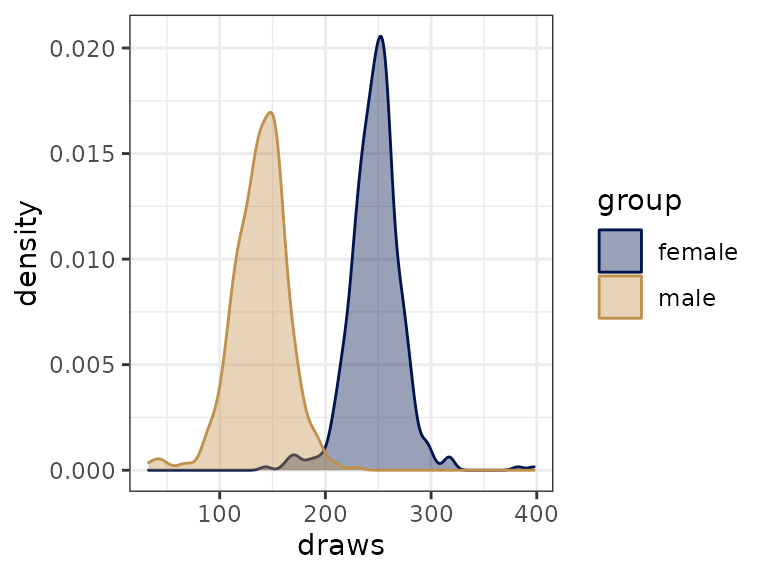

Comparing groups of factor levels with faintr
Michael Franke
2022-08-21
Source:vignettes/faintr_basics.Rmd
faintr_basics.RmdMotivation
The faintr (FActorINTerpreteR) package provides convenience functions for evaluating Bayesian regression models for factorial designs, fitted with the brms package (Bürkner, 2017). The faintr package allows for the extraction of many meaningful comparisons irrespective of the encoding scheme initially used in the model. The package provides the following convenience functions:
-
get_cell_definitionsreturns information on the factors and their encoding in the model. -
extract_cell_drawsprovides posterior draws and metadata for one subset of factorial design cells. -
compare_groupsallows the comparison of two subsets of factorial design cells.
Currently, the package does not support multivariate models and models that use families categorical, dirichlet, multinomial, and logistic_normal. Furthermore, models must not include special effect terms mo(), mi(), me(), and cs() for fixed effects. Also note that faintr currently does not support models where the intercept is a population-level parameter (class b), as is the case when using the 0 + Intercept syntax in the brm function call.
Installation
Install the faintr package with devtools from GitHub:
if (!require(devtools)) {
install.packages('devtools')
}
devtools::install_github('michael-franke/faintr', build_vignettes = TRUE)Example with treatment coding (dummy coding)
The running data set in this vignette is borrowed from an experiment by Winter and Grawunder (2012) and is included in the faintr package. The data set stores measurements of voice pitch of male and female Korean speakers in polite and informal social contexts. The study followed a \(2 \times 2\) factorial design with factor gender (M or F) and factor context (inf or pol), yielding a total of four possible factor level combinations (also called design cells). See ?politeness for more information on the data set.
Let’s peek at the first couple of rows:
head(politeness)
## # A tibble: 6 × 5
## subject gender sentence context pitch
## <chr> <chr> <chr> <chr> <dbl>
## 1 F1 F S1 pol 213.
## 2 F1 F S1 inf 204.
## 3 F1 F S2 pol 285.
## 4 F1 F S2 inf 260.
## 5 F1 F S3 pol 204.
## 6 F1 F S3 inf 287.The cell means of this data set are:
politeness %>%
group_by(gender, context) %>%
summarize(mean_pitch = mean(pitch))
## # A tibble: 4 × 3
## # Groups: gender [2]
## gender context mean_pitch
## <chr> <chr> <dbl>
## 1 F inf 261.
## 2 F pol 233.
## 3 M inf 144.
## 4 M pol 133.A Bayesian regression model for this data set, fitted in brms, might look as follows. The model regresses voice pitch against factors gender and context (with interaction) and includes by-participant and by-sentence random intercepts.
fit_brms_politeness <- brm(formula = pitch ~ gender * context + (1 | subject + sentence),
data = politeness,
chains = 2,
iter = 500,
control = list(adapt_delta = 0.99),
cores = 2,
seed = 1234 # for reproducible results
)Let’s look at the estimated coefficients:
fixef(fit_brms_politeness)
## Estimate Est.Error Q2.5 Q97.5
## Intercept 260.97117 24.509305 214.805833 305.65970
## genderM -116.33043 38.491076 -191.939831 -45.90558
## contextpol -27.23192 7.717121 -43.091737 -11.27604
## genderM:contextpol 15.10265 10.869829 -4.903683 38.15758From the names of the model coefficients (or lack thereof), we can infer that the model must have dummy-coded the factors, which is the default encoding scheme of the brm function. The estimated intercept in dummy coding constitutes the reference level, here female speakers (gender:F) in informal contexts (context:inf). All remaining factor level combinations can be retrieved by adding the corresponding slope coefficients to the estimated intercept.
get_cell_definitions
We can use the function get_cell_definitions of the faintr package to obtain information on the factors and their internal encoding in the model:
get_cell_definitions(fit_brms_politeness)
## # A tibble: 4 × 7
## cell gender context Intercept genderM contextpol `genderM:contextpol`
## <int> <chr> <chr> <dbl> <dbl> <dbl> <dbl>
## 1 1 F pol 1 0 1 0
## 2 2 F inf 1 0 0 0
## 3 3 M pol 1 1 1 1
## 4 4 M inf 1 1 0 0Generally, we can retrieve the estimate for a design cell by taking the dot product between the row of interest in the design matrix and the estimated coefficients. For instance, the estimated mean for the cell with data from male speakers in informal contexts is given by
\[\begin{equation} \mu_{\text{(M, inf)}} = \begin{bmatrix} 1 & 1 & 0 & 0 \end{bmatrix} \begin{bmatrix} 260.97117 \\ -116.33043 \\ -27.23192 \\ 15.10265 \\ \end{bmatrix} \approx 144.64 \end{equation}\]
extract_cell_draws
Manually adding model coefficients can get tedious and error-prone very quickly, especially for models with more factors, more levels within factors or more complicated encoding schemes. With the function extract_cell_draws from the faintr package, we can extract posterior samples using a simple filter-syntax. To extract posterior draws for, say, male speakers in informal contexts, we do:
extract_cell_draws(fit_brms_politeness, gender == 'M' & context == 'inf')
## # A draws_df: 250 iterations, 2 chains, and 1 variables
## draws
## 1 124
## 2 150
## 3 140
## 4 161
## 5 147
## 6 129
## 7 160
## 8 150
## 9 161
## 10 158
## # ... with 490 more draws
## # ... hidden reserved variables {'.chain', '.iteration', '.draw'}We can also use negations and disjunctions to subset design cells:
extract_cell_draws(fit_brms_politeness, gender != 'F' | context == 'inf')
## # A draws_df: 250 iterations, 2 chains, and 1 variables
## draws
## 1 167
## 2 192
## 3 167
## 4 178
## 5 184
## 6 171
## 7 193
## 8 182
## 9 180
## 10 192
## # ... with 490 more draws
## # ... hidden reserved variables {'.chain', '.iteration', '.draw'}To extract posterior draws for only a part of the factors used in the model, we simply omit the unwanted factors in the group specification. Here we are interested in voice pitch in polite contexts, averaged over male and female speakers. Let’s also set a more informative column name:
extract_cell_draws(fit_brms_politeness, context == 'pol', colname = 'context:pol')
## # A draws_df: 250 iterations, 2 chains, and 1 variables
## context:pol
## 1 180
## 2 202
## 3 166
## 4 172
## 5 190
## 6 181
## 7 191
## 8 182
## 9 176
## 10 193
## # ... with 490 more draws
## # ... hidden reserved variables {'.chain', '.iteration', '.draw'}Furthermore, we can extract posterior draws for the grand mean, i.e., the mean of all design cells together. We can do so by not specifying any group level in the function call:
extract_cell_draws(fit_brms_politeness, colname = 'grand_mean')
## # A draws_df: 250 iterations, 2 chains, and 1 variables
## grand_mean
## 1 188
## 2 210
## 3 176
## 4 182
## 5 200
## 6 188
## 7 202
## 8 196
## 9 187
## 10 203
## # ... with 490 more draws
## # ... hidden reserved variables {'.chain', '.iteration', '.draw'}We can use the output of extract_cell_draws for inspecting and comparing posterior draws visually:
draws_gender <- bind_draws(extract_cell_draws(fit_brms_politeness, gender == 'M', colname = 'male'),
extract_cell_draws(fit_brms_politeness, gender == 'F', colname = 'female'))
draws_gender %>%
pivot_longer(cols = variables(.), names_to = 'group', values_to = 'draws') %>%
ggplot(aes(x = draws, color = group, fill = group)) +
geom_density(alpha = .4)
Or in conjunction with the summarise function of the dplyr package (Wickham et al., 2022) to obtain useful summary statistics, such as means and credible intervals:
extract_cell_draws(fit_brms_politeness, gender == 'M' & context == 'pol') %>%
summarise(
`|95%` = hdi(draws)[1],
mean = mean(draws),
`95%|` = hdi(draws)[2]
)
## # A tibble: 1 × 3
## `|95%` mean `95%|`
## <dbl> <dbl> <dbl>
## 1 86.6 133. 185.Because extract_cell_draws returns the draws in draws_df format as provided by the posterior package (Bürkner et al., 2022), we can easily access the many convenience functions it offers. Here we subset the draws for the first ten iterations of the first chain using subset_draws:
extract_cell_draws(fit_brms_politeness, gender == 'M' & context == 'pol') %>%
subset_draws(variable = 'draws', chain = 1, iteration = 1:10) %>%
glimpse()
## Rows: 10
## Columns: 4
## $ draws <dbl> 109.2502, 136.5876, 131.3179, 149.1211, 131.1111, 122.0383,…
## $ .chain <int> 1, 1, 1, 1, 1, 1, 1, 1, 1, 1
## $ .iteration <int> 1, 2, 3, 4, 5, 6, 7, 8, 9, 10
## $ .draw <int> 1, 2, 3, 4, 5, 6, 7, 8, 9, 10
compare_groups
To compare different (groups of) cells to each other, the faintr package provides the function compare_groups. The function returns the mean difference between the ‘higher’ and ‘lower’ group specification, its credible interval (defaults to 95%), as well as the posterior probability and odds that the mean estimate for the ‘higher’ group is higher than that of the ‘lower’ group.
Although the fit of the regression model uses a particular reference cell for dummy coding (female speakers in informal contexts), other contrasts of relevance can be retrieved from the posterior samples. For example, if we want to compare two cells diagonally, say, female speakers in polite contexts against male speakers in informal contexts, we can do this like so:
compare_groups(
fit = fit_brms_politeness,
higher = gender == 'F' & context == 'pol',
lower = gender == 'M' & context == 'inf'
)
## Outcome of comparing groups:
## * higher: gender == "F" & context == "pol"
## * lower: gender == "M" & context == "inf"
## Mean 'higher - lower': 89.1
## 95% HDI: [ 16.55 ; 163.4 ]
## P('higher - lower' > 0): 0.994
## Posterior odds: 165.7As before, we can use negations and disjunctions in the group specifications. Let us also lower the mass in the highest density interval (HDI) to 0.89 in this comparison:
compare_groups(
fit = fit_brms_politeness,
higher = gender == 'F' & context != 'pol',
lower = gender != 'F' | context == 'pol',
hdi = 0.89
)
## Outcome of comparing groups:
## * higher: gender == "F" & context != "pol"
## * lower: gender != "F" | context == "pol"
## Mean 'higher - lower': 90.67
## 89% HDI: [ 49.23 ; 124.3 ]
## P('higher - lower' > 0): 0.996
## Posterior odds: 249If we want to compare male and female speakers only (that is, irrespective of contexts), we simply omit the context variable in the group specifications:
compare_groups(
fit = fit_brms_politeness,
higher = gender == 'M',
lower = gender == 'F'
)
## Outcome of comparing groups:
## * higher: gender == "M"
## * lower: gender == "F"
## Mean 'higher - lower': -108.8
## 95% HDI: [ -177.4 ; -32.96 ]
## P('higher - lower' > 0): 0.004
## Posterior odds: 0.004016We can also compare the effect of female speakers against the grand mean, to retrieve the information normally obtained by sum coding. To do so, we leave out one of the two group specifications in the function call (here the ‘lower’ group):
compare_groups(
fit = fit_brms_politeness,
higher = gender == 'F'
)
## Outcome of comparing groups:
## * higher: gender == "F"
## * lower: grand mean
## Mean 'higher - lower': 54.39
## 95% HDI: [ 16.48 ; 88.7 ]
## P('higher - lower' > 0): 0.996
## Posterior odds: 249Example with sum coding
The faintr package also works for models with different contrast coding schemes. Notice that as long as we use uninformative (improper) priors over coefficients, the results for estimators of various design cells should be the same (or very similar, given natural variation in sampling) across coding schemes.
To see this, here is a model with sum-coded predictor variables, all else equal to the case from before.
# make predictors 'factors' because that's required for contrast coding
# also: change order to match coding assumed in the main text
politeness_sum <- politeness %>%
mutate(
gender = factor(gender, levels = c('M', 'F')),
context = factor(context, levels = c('pol', 'inf'))
)
# apply 'sum' contrasts
contrasts(politeness_sum$gender) <- contr.sum(2)
contrasts(politeness_sum$context) <- contr.sum(2)
# add intelligible names to the new contrast coding
colnames(contrasts(politeness_sum$gender)) <- ':M'
colnames(contrasts(politeness_sum$context)) <- ':pol'
# run brm as usual
fit_brms_politeness_sum <- brm(formula = pitch ~ gender * context + (1 | subject + sentence),
data = politeness_sum,
chains = 2,
iter = 500,
control = list(adapt_delta = 0.99),
cores = 2,
seed = 1234
)A call to get_cell_definitions shows how our predictor variables are encoded in the newly fitted model:
get_cell_definitions(fit_brms_politeness_sum)
## # A tibble: 4 × 7
## cell gender context Intercept `gender:M` `context:pol` `gender:M:context:pol`
## <int> <fct> <fct> <dbl> <dbl> <dbl> <dbl>
## 1 1 F pol 1 -1 1 -1
## 2 2 F inf 1 -1 -1 1
## 3 3 M pol 1 1 1 1
## 4 4 M inf 1 1 -1 -1As can be seen in the output, factor gender is now coded 1 for male speakers, and -1 for female speakers. Likewise, factor context is coded 1 for polite contexts, and -1 for informal contexts. Importantly, the estimated coefficients in the sum-coded model do not reflect the difference to a reference level (as in treatment coding), but the difference to the grand mean (i.e., the mean of all design cells).
Here are summary statistics for the estimated posterior for male speakers in polite contexts for the model with sum coding:
extract_cell_draws(fit_brms_politeness_sum, gender == 'M' & context == 'pol') %>%
summarise(
`|95%` = hdi(draws)[1],
mean = mean(draws),
`95%|` = hdi(draws)[2]
)
## # A tibble: 1 × 3
## `|95%` mean `95%|`
## <dbl> <dbl> <dbl>
## 1 87.6 136. 190.This is nearly identical (modulo sampling variation) to the results we obtained above (repeated here) for the previous model with treatment coding:
extract_cell_draws(fit_brms_politeness, gender == 'M' & context == 'pol') %>%
summarise(
`|95%` = hdi(draws)[1],
mean = mean(draws),
`95%|` = hdi(draws)[2]
)
## # A tibble: 1 × 3
## `|95%` mean `95%|`
## <dbl> <dbl> <dbl>
## 1 86.6 133. 185.For emphasis: If you fit a model with any prior structure on the model coefficients other than uniform/uninformative priors, it is not guaranteed that the results are the same for models with different contrast coding schemes. For illustration, consider the sum-coded model from before with a skeptical prior on coefficients gender:M and context:pol:
# skeptical prior on fixed effects
priors <- c(
prior(normal(0, 10), coef = `gender:M`),
prior(normal(0, 10), coef = `context:pol`)
)
# run brm as usual
fit_brms_politeness_sum_prior <- brm(formula = pitch ~ gender * context + (1 | subject + sentence),
data = politeness_sum,
prior = priors,
chains = 2,
iter = 500,
control = list(adapt_delta = 0.99),
cores = 2,
seed = 1234
)The priors we have chosen here translate into a prior belief that there is likely no difference between a given factor level and the grand mean. Since the data set is relatively small, the priors have a strong influence on the resulting posterior estimates:
extract_cell_draws(fit_brms_politeness_sum_prior, gender == 'M' & context == 'pol') %>%
summarise(
`|95%` = HDInterval::hdi(draws)[1],
mean = mean(draws),
`95%|` = HDInterval::hdi(draws)[2]
)
## # A tibble: 1 × 3
## `|95%` mean `95%|`
## <dbl> <dbl> <dbl>
## 1 127. 184. 249.As expected, the posterior estimate for male speakers in polite contexts strongly deviates from the estimate for the same factor level under the dummy-coded model from before. In fact, the estimate is now much closer to the grand mean (which makes sense given the way we informed the model).
References
Bürkner P.-C. (2017). brms: An R Package for Bayesian Multilevel Models Using Stan. Journal of Statistical Software, 80(1), 1-28. https://doi.org/10.18637/jss.v080.i01.
Bürkner P.-C., Gabry J., Kay M., Vehtari A. (2022). posterior: Tools for Working with Posterior Distributions. https://mc-stan.org/posterior/.
Wickham H., François R., Henry L., Müller K. (2022). dplyr: A Grammar of Data Manipulation. https://CRAN.R-project.org/package=dplyr.
Winter B., Grawunder S. (2012). The Phonetic Profile of Korean Formality. Journal of Phonetics, 40, 808-15.